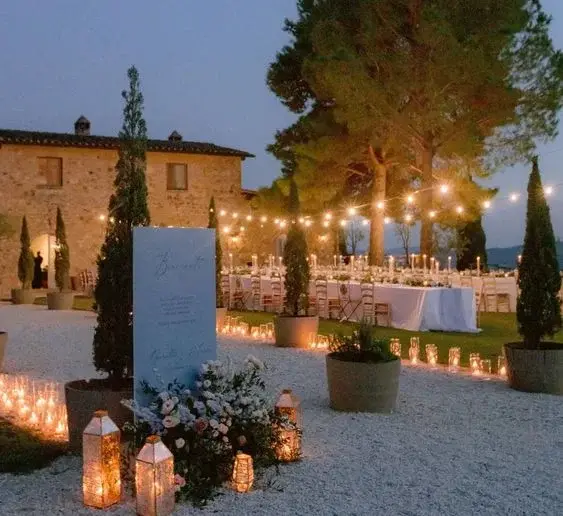
Comment mélanger innovation et tradition ?
Les tendances mariage 2024 allient habilement modernité et tradition. Les mariés d’aujourd’hui recherchent des célébrations uniques, incorporant des avancées technologiques tout en honorant les coutumes ancestrales. Des cérémonies écoresponsables aux réceptions interactives, en passant par des tenues élégantes et des décors impressionnants, chaque détail reflète à la fois personnalité et authenticité.
Les innovations numériques simplifient la planification et enrichissent l’expérience des invités, tandis que les rituels traditionnels ajoutent profondeur et sens. Cet article explore les tendances majeures de 2024, des thèmes aux technologies, en passant par la mode et les pratiques écoresponsables, pour offrir un aperçu des mariages de demain, où chaque détail raconte une histoire unique.
Tendances mariage 2024
Thèmes populaires
Mariages écoresponsables
Les mariages écoresponsables gagnent en popularité, reflétant une prise de conscience croissante de l’importance de la durabilité et de la protection de l’environnement. Les mariés cherchent à réduire leur empreinte carbone en optant pour des pratiques respectueuses de la planète. Cela se traduit par le choix de lieux de cérémonie en plein air ou de sites utilisant des énergies renouvelables, des décorations fabriquées à partir de matériaux recyclés ou réutilisables, et des fleurs locales et de saison. Les repas mettent en avant des produits bio, locaux et de saison, souvent servis sous forme de buffets pour minimiser le gaspillage alimentaire. De plus, les invitations numériques remplacent de plus en plus les versions papier, tandis que les cadeaux de mariage incluent souvent des dons à des associations environnementales. En adoptant ces pratiques écoresponsables, les mariés de 2024 montrent qu’il est possible de célébrer de manière somptueuse tout en respectant notre planète.
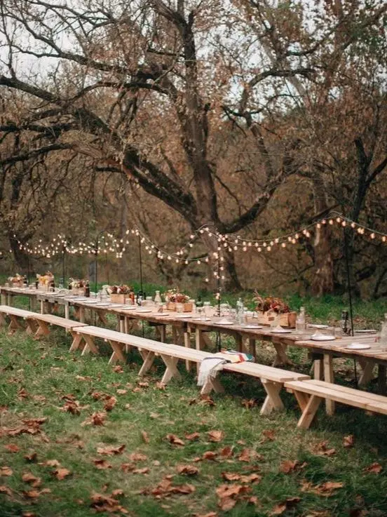
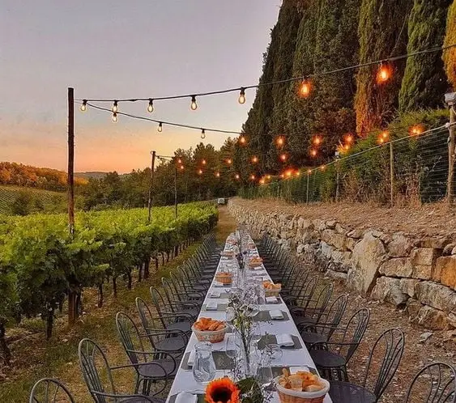
Esprit château et vignes
Le thème « Esprit château et vignes » est prisé pour les mariages, offrant un décor élégant et romantique. Les couples choisissent des châteaux entourés de vignobles pour leurs cérémonies et réceptions, créant une ambiance raffinée. Les décorations mettent en valeur des éléments naturels et une palette de couleurs douces, tandis que les invités savourent des mets raffinés et des vins locaux dans un cadre aristocratique et enchanteur.
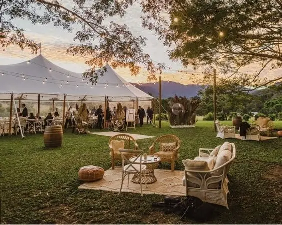
Thème bohème chic
Le thème bohème chic domine les mariages avec son ambiance décontractée et naturelle. Les mariés optent pour des robes fluides ornées de dentelle et des costumes décontractés en lin. Les cérémonies en plein air, décorées de guirlandes de fleurs sauvages et de macramés suspendus, créent une atmosphère chaleureuse. Les accessoires incluent des couronnes de fleurs et des bijoux en pierres naturelles, tandis que la musique acoustique et les sièges confortables ajoutent une touche intime à cette célébration bohème.
Thèmes et décorations
Couleurs et palettes
Couleurs pastel et neutres
Les mariages adoptent les couleurs pastel et neutres pour une ambiance douce et élégante. Du rose poudré au beige, ces teintes créent une atmosphère calme et raffinée. Des robes de mariée aux décorations florales, chaque détail est soigneusement harmonisé pour une célébration subtile et mémorable.
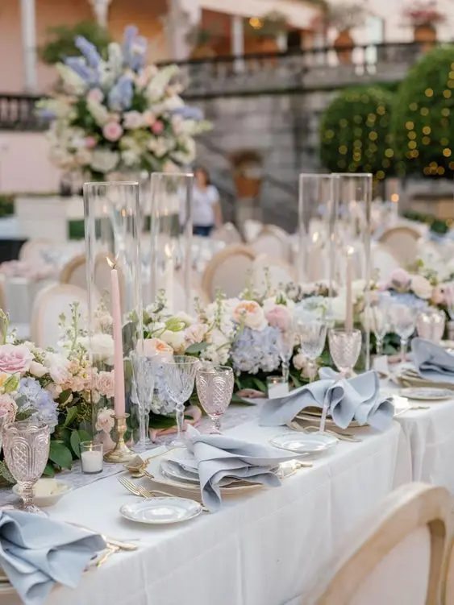
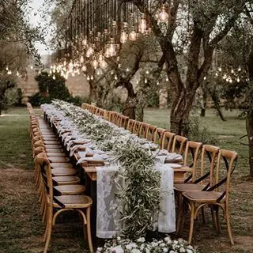
Nuances de vert
Les mariages mettent en avant les nuances de vert pour une ambiance naturelle et rafraîchissante. Des tons comme le vert sauge, le vert olive et le vert émeraude sont choisis pour leur élégance et leur capacité à créer une atmosphère apaisante et harmonieuse. Ces nuances sont intégrées dans les robes de mariée, les arrangements floraux et les décorations, apportant une touche de verdure et de vitalité à chaque détail de la cérémonie et de la réception.
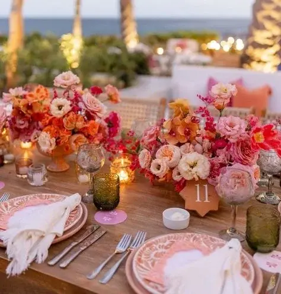
Couleurs vives et audacieuses
Les couleurs vives et audacieuses, une ambiance dynamique et vibrante. Des teintes telles que le rouge écarlate, le bleu cobalt, le jaune soleil et le vert émeraude dominent la palette, ajoutant une touche de vitalité et de modernité à chaque aspect de la célébration. Des robes de mariée aux décorations florales, ces couleurs captivent et émerveillent, créant une atmosphère festive et inoubliable pour les mariés et leurs invités.
Décorations et ambiances
En 2024, les mariages se distinguent par leur élégance à travers des décors floraux luxuriants qui transforment les lieux de cérémonie et de réception en véritables jardins enchantés. Des arrangements somptueux de roses, d’orchidées et d’hortensias captivent les regards, créant une ambiance opulente et sophistiquée. L’utilisation astucieuse de matériaux naturels comme le bois, la pierre et le lin renforce cette esthétique, offrant une touche authentique et respectueuse de l’environnement. De plus, l’éclairage romantique et féérique joue un rôle crucial en illuminant subtilement les espaces avec des guirlandes lumineuses, des lanternes suspendues et des bougies, créant une atmosphère magique et intime lors des soirées de mariage. Chaque détail est soigneusement pensé pour créer un cadre enchanteur où les mariés et leurs invités peuvent vivre des moments inoubliables dans une atmosphère de douceur et de réconfort.
Cérémonies et réceptions
Lieux de cérémonie
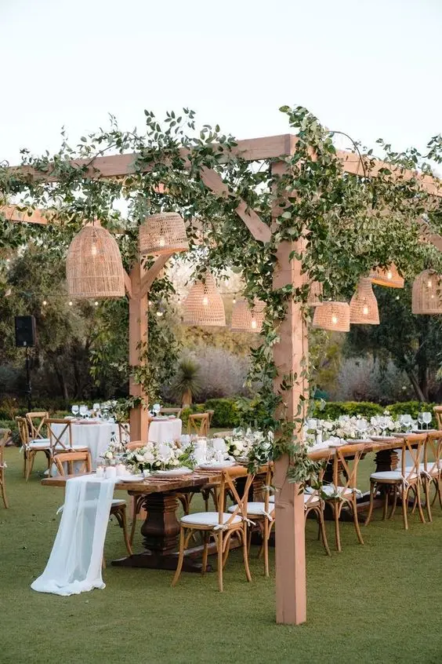
Mariages en plein air
Les mariages en plein air sont au sommet des tendances pour 2024, offrant des décors naturels et une atmosphère envoûtante. Des jardins botaniques aux plages pittoresques en passant par les vignobles romantiques, les couples choisissent des cadres extérieurs qui ajoutent une dimension de beauté naturelle à leur journée spéciale. Ces espaces permettent une personnalisation maximale, avec des arches florales, des tapis d’herbe et des vues à couper le souffle qui se fondent harmonieusement dans le paysage. Les mariés peuvent ainsi célébrer leur amour entouré de la splendeur de la nature, offrant à leurs invités une expérience mémorable et immersive.
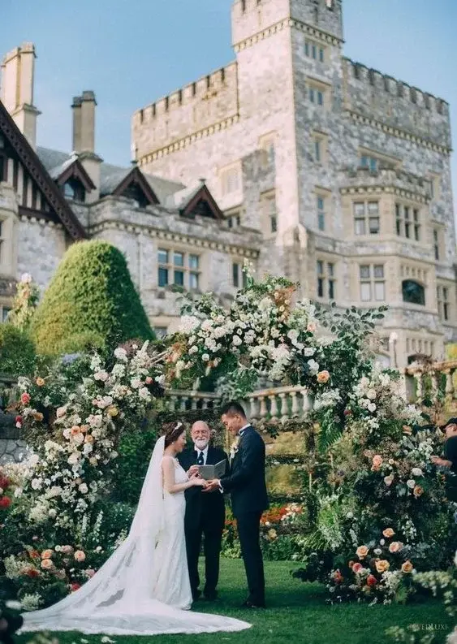
Lieux historiques et châteaux
Des lieux historiques et des châteaux captivent par leur ambiance majestueuse et leur richesse culturelle. Ces cadres prestigieux offrent un décor somptueux et chargé d’histoire, idéal pour les couples en quête d’une célébration grandiose et intemporelle. Que ce soit dans des manoirs anciens, des abbayes centenaires ou des châteaux médiévaux, chaque lieu offre une architecture époustouflante, des jardins impeccables et souvent une vue imprenable. Les mariés peuvent personnaliser ces espaces avec des décorations élégantes, des éclairages subtils et des détails qui mettent en valeur leur style et leur histoire. C’est une occasion de créer des souvenirs inoubliables dans des décors qui inspirent et émerveillent, ajoutant une touche de magie et de grandeur à leur journée spéciale.
Réceptions et festivités
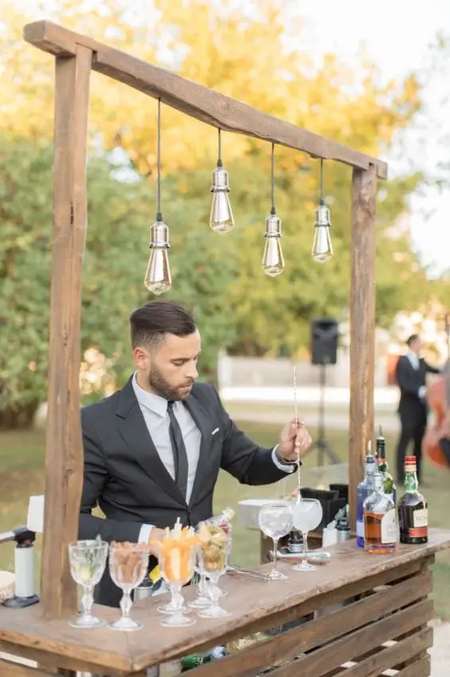
Cocktails personnalisés et bars à thème
Offrir une expérience gustative unique. Des mixologues talentueux créent des boissons sur mesure, mettant en valeur des ingrédients frais et locaux, tandis que les bars à thème ajoutent une touche d’originalité avec des cocktails inspirés de destinations exotiques ou d’époques historiques. Cette tendance promet une soirée mémorable où chaque verre raconte une histoire et complète parfaitement l’ambiance festive.
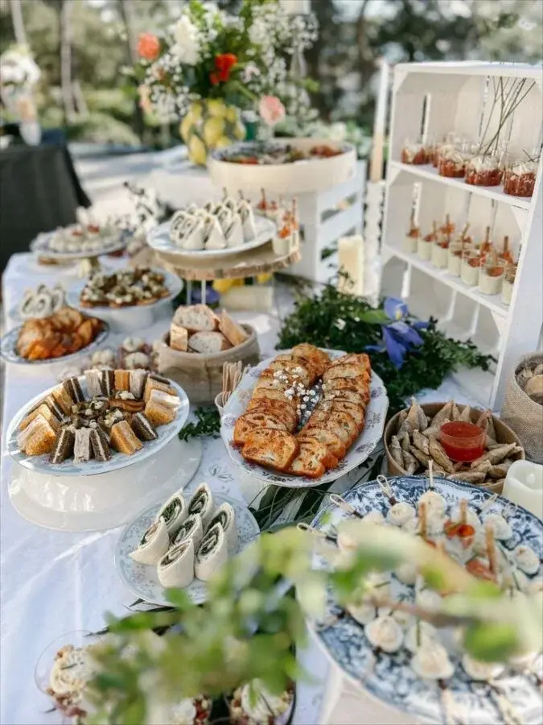
Food trucks et repas de style buffet
Pour une expérience culinaire décontractée et diversifiée, les food trucks offrent une variété de cuisines, des burgers gourmets aux tacos exotiques, permettant aux invités de choisir selon leurs préférences. Ce format informel crée une atmosphère conviviale et interactive, idéale pour une célébration où la diversité gastronomique est mise à l’honneur. De plus, les repas de style buffet permettent une personnalisation maximale, avec une sélection généreuse d’options de plats chauds et froids qui satisfont tous les palais. Cette approche culinaire dynamique ajoute une touche moderne et décontractée à l’événement, garantissant une expérience gastronomique mémorable pour tous les convives.
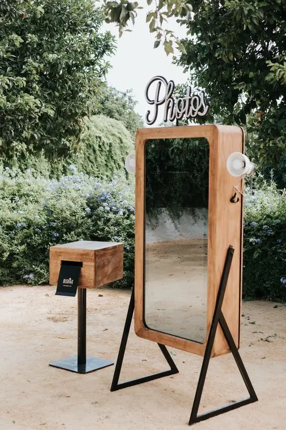
Animations interactives et photobooths
Les mariages de 2024 se démarquent par leurs animations interactives et leurs photobooths, offrant une expérience divertissante et immersive pour les invités. Des jeux interactifs comme des quiz personnalisés ou des défis ludiques captivent l’attention et favorisent l’interaction entre les convives. Les photobooths, avec leurs accessoires thématiques et leurs arrière-plans personnalisés, permettent aux invités de capturer des souvenirs amusants et spontanés tout au long de la soirée. Sachez que je loue un photobooth qui vous permet de vous amuser tout en gardant des souvenirs !
Ces éléments ajoutent une touche de dynamisme et de convivialité à l’événement, créant des moments de partage inoubliables. Ils sont également un moyen idéal pour personnaliser l’expérience de mariage, en permettant aux mariés de refléter leur personnalité et leurs intérêts à travers des activités interactives et des souvenirs photographiques qui resteront gravés dans les mémoires.
Tendances Technologiques
Innovations Numériques
Invitations numériques et sites web de mariage
Une communication moderne et écologique avec les invités, Les invitations numériques envoyées par les mariés offrent flexibilité et personnalisation, tandis que les sites web centralisent les informations essentielles comme les détails de la cérémonie et les hébergements, enrichissant ainsi l’expérience des invités de manière interactive et efficace.
Photographie et Vidéographie
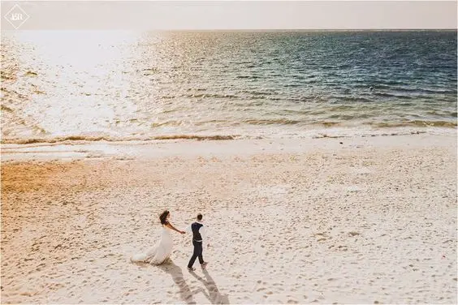
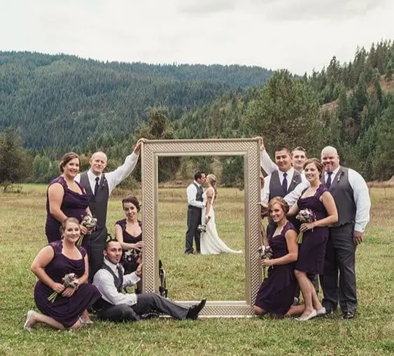
Drones pour capturer des vues aériennes
Une tendance populaire dans les mariages. Ces appareils permettent de capturer des images spectaculaires et immersives du lieu de la cérémonie, de la réception et des invités, offrant ainsi une perspective unique et mémorable de l’événement. Les mariés peuvent créer des souvenirs visuels exceptionnels grâce aux prises de vue aériennes, mettant en valeur la beauté des paysages environnants et ajoutant une dimension cinématographique à leur jour spécial.
Vidéos de style documentaire
Les mariages adoptent les vidéos de style documentaire pour capturer de manière authentique et cinématographique les moments forts de la journée. Ces vidéos se distinguent par leur approche narrative et leur capacité à raconter l’histoire du couple à travers des interviews, des séquences spontanées et des moments émouvants. Elles offrent une perspective immersive et artistique de l’événement, capturant non seulement les événements clés mais aussi les émotions et les interactions entre les mariés, leur famille et leurs amis. Ces productions vidéographiques apportent une valeur ajoutée en créant des souvenirs durables et en immortalisant chaque détail significatif de cette journée exceptionnelle.
Les tendances mariage 2024, en bref...
En conclusion, personnaliser son mariage tout en restant à la pointe des tendances de 2024 offre aux couples une opportunité unique de créer une célébration véritablement authentique et mémorable. En intégrant des éléments qui reflètent leur style personnel et leurs valeurs, ils peuvent non seulement rendre leur journée spéciale plus significative, mais aussi offrir une expérience inoubliable à leurs invités. L’adoption des dernières tendances, qu’il s’agisse de décors, de menus, de divertissements ou de technologies comme les drones et les vidéos documentaires, permet aux mariés de vivre une journée qui leur ressemble pleinement, tout en créant des souvenirs qui perdurent au fil des années pour les mariés et les invités.